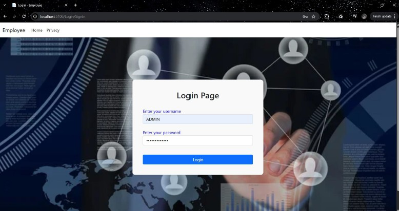
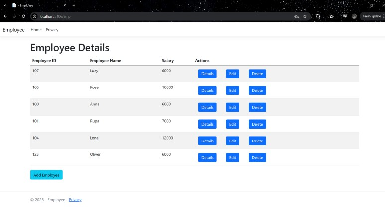

Developed a full-stack employee management web application built on ASP.NET MVC with role-based authentication, complete CRUD functionality, and SQL Server database integration via stored procedures.
This project was developed by me during my internship at MariApps Marine Solutions Pvt. Ltd., Kochi, India.


Developed during an internship, this application provides a structured platform for managing employee records. The system supports two distinct user roles — admin and standard user — each with different levels of access and functionality, built on top of a custom authentication and registration system.
Designed and implemented a user-friendly interface using ASP.NET Core MVC, with a focus on seamless CRUD operations across a clean, role-aware view structure. The EmpController handles all employee record operations, i.e, creating, reading, updating, and deleting, with each action mapped to a corresponding SQL Server stored procedure, keeping business logic cleanly separated from the database layer. Database connectivity was established using ADO.NET through a dedicated Data Access Layer (Emp_DAL, Login_DAL), centralizing all data handling and query execution. The LoginController manages user authentication and registration with CSRF protection via anti-forgery tokens, and implements role verification to route admin and standard users to appropriately scoped views.